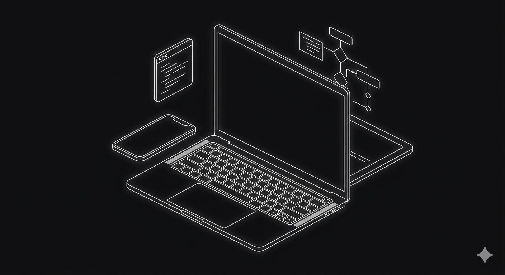

Gustavo Henrique Andrade de Carvalho
Brasileiro, 21 anos, graduando em Gestão de Tecnologia da Informação. Como desenvolvedor Front-end, foco na criação de interfaces modernas, intuitivas e de alta performance, unindo a visão estratégica da gestão à execução técnica do desenvolvimento web.
Busco aplicar meus conhecimentos em arquitetura de software e experiência do usuário (UX) para construir soluções escaláveis que gerem valor real para o negócio. Atualmente, dedico-me a aprimorar minhas habilidades em tecnologias modernas do ecossistema Web e na entrega de códigos limpos e eficientes.
Especialidade: Desenvolvimento Front-end focado em responsividade e performance.
Visão de Gestão: Aplicação de metodologias ágeis e governança no ciclo de vida do software.
Objetivo: Integrar equipes de desenvolvimento onde eu possa contribuir com interfaces robustas e crescer tecnicamente.
Celular/WhatsApp: (11) 96467-9443
Email: gustavo1045carvalho@gmail.com
LinkedIn: Acessar Perfil